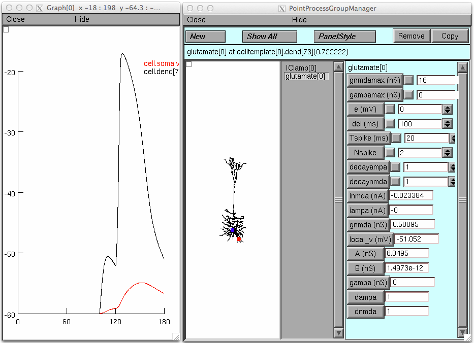
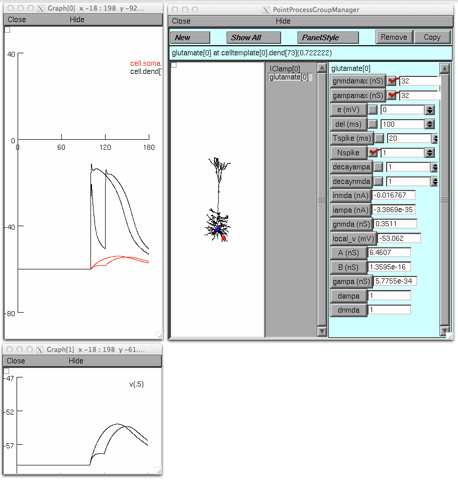

This is the readme for a model associated with the paper Polsky A, Mel B, Schiller J (2009) Encoding and decoding bursts by NMDA spikes in basal dendrites of layer 5 pyramidal neurons. J Neurosci 29:11891-903 These files were contributed by Dr. A. Polsky glutamate.mod This is the simulated glutamate impact on the postsynaptic cell via AMPA/NMDA receptors Release parameters include del: delay for the first pulse Tspike: interspike (presynaptic release) intervals Nspike: number of presynaptic pulses gNMDAmax and gAMPAmax: postsynaptic conductances, in case of NMDA, the peak possible conductance. In this simulation AMPA conductance was set to zero. decayAMPA, decayNMDA: degree of short term plasticity of the postsynaptic conductances, in the paper it was set to one (meaning same intensity for all pulses). taudAMPA,taudNMDA: timecourse of the short term plasticity layerV.hoc the morphology and the basec biophysical properties of the cortical layer 5 pyramidal cell (not the same cell as used in the original paper) main.hoc (+ses) the file that runs the simulation In the simulation, the glutamatergic synapse is located on a basal branch (dend[73]). Paired pulse stimulation elicits an NMDA spike with stimulation >10nS. NMDA spike threshold with a single pulse is ~18nS. Depolarizing the soma to recreate the expected first stimulus depolarization shifts the single pulse threshold to ~15nS. Below is a table of NMDA receptor conductance and somatic depolarization with paired pulse stimulation, single pulse and single pulse +somatic current injection of 0.15nA 2 0.2 0.1 0.1 4 0.4 0.2 0.2 6 0.6 0.3 0.3 8 0.9 0.2 0.5 10 1.3 0.5 0.7 12 2.2 0.7 1 14 4.1 0.8 1.3 16 5.1 1 1.8 18 5.86 1.3 2.6 20 6.5 1.7 3.3 22 7 2.6 3.8 24 7.5 3.7 4.2 26 7.8 4.4 4.6 28 8 5 4.9 30 8.2 5.4 5.2 32 8.4 5.8 5.5 34 8.5 6 5.7 36 8.6 6.1 5.8 Usage: ------ After autolaunching or downloading and compiling the mod files (nrnivmodl (linux), mknrndll (ms win or mac os x), running the simulation (with Init & Run button) will produce this default graph:  An illustration analagous to fig 9 in the paper: turn "Keep Lines" on in the graph through the pop up menu, set the gnmdamax and gampamax to 16; run the simulation. Then set NSpike to 1 and set both conductance densities to 32 and run the simulation; these graphs should appear: 